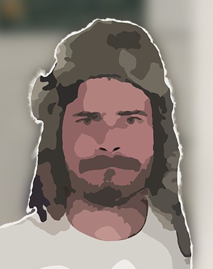

Who am I? 🤔
Well, I’m a BEHAVIORAL ECOLOGIST studying the social and environmental drivers of human behavior; an ARCHAEOLOGIST using past human behavior to test hypotheses; a DATA SCIENTIST trying to make archaeological research more reproducible; an EDUCATOR working to make archaeological science more accessible; and a NERD hoping to make life just a little more weird. I’ll take all the Middle Earth, Marvel, Star Trek, Star Wars, and Stargate I can get. That, and DnD. I’m even a critter.
Contact Information
Center for Collaborative Synthesis in Archaeology
Institute of Behavioral Science
University of Colorado, Boulder
1440 15th Street
Boulder, CO 80302
(303) 492-8147
Appointments
-
Post-Doctoral Associate | 2022‑present
Center for Collaborative Synthesis in Archaeology, CU Boulder -
Assistant Director | 2018‑2022
University of Utah Archaeological Center
Education
-
University of Utah | Salt Lake City, UT
PhD in Anthropology, 2022 -
Northern Illinois University | DeKalb, IL
MA in Philosophy, 2009 -
University of Central Arkansas | Conway, AR
BA in History and Philosophy, 2006
Professional Affiliations
- Great Basin Anthropological Association | 2016‑present
- Society for American Archaeology | 2014‑present